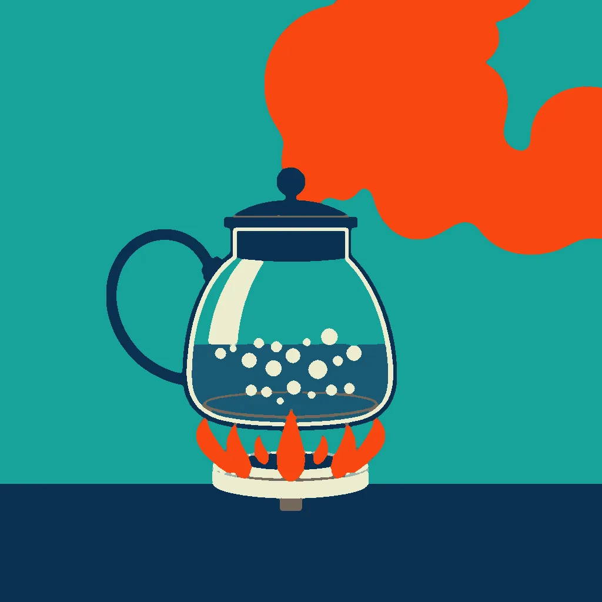

First Light ·
a kettle boiling on a camp stove, a geyser boiling over in one great column of steam
Clear night lights hold the window pane. Kettle coil curls tight and bright. Water hits the burner ring. It jumps. It shakes. Tiny bubbles break the skin. Steam hisses out a sharp click. Small white rings climb up the sides. Heat gathers in the metal neck.
Hot spring cracks the stone below. A vast column rises now. Steam fills every inch of air. The ground rolls under pressure. One great spout shoots high and wide. It fills the frame, loud and wet. Water breaks the rock's tight hold. A white wall crashes down upon itself.
Back to the small burner's ring. Kettle still boils its own ring. Bubbles split against the glass. Hand twists the cap one turn.
How this piece was made
- 01Poem written byQwen3.5 9B recorded
Local model on one RTX 3070 Ti. Until 11 October 2026 the same model scored its own drafts and wrote new ones.
- 02Image brief written byQwen3 8B recorded
Local model. It wrote the subject part of the brief shown below. Code wrote the rest. The published picture was not drawn from this brief: it was redrawn on 13 October with a glass kettle, at the founder’s request, from a prompt Claude wrote.
- 03Image rendered byFLUX.1 [schnell] recorded
Local image model on the same graphics card. It draws several candidates. Before judging, code crops each one and flattens it to at most eight colours, so the image shown is not the raw render.
- 04Image chosen byFounder’s pick, judged by Claude Opus 5.5 recorded
Claude, working as c01corp’s art critic. It scores each candidate blind, without seeing the poem or the other candidates.
- Poem drafts
- 5 of 5
- Poem self-score
- 6/10
- Image candidates
- 1
- Judge’s score
- 4/10
- Selection
- Founder’s pick from the candidates
The image brief
Code wrote everything before “The subject:”. The local model wrote the part after it. When the chosen picture was a redraw, the judge’s notes on what to fix were added to the end of this brief and are not shown here. This picture was not drawn from this brief. At the founder’s request it was redrawn on 13 October with a glass kettle, from a prompt Claude wrote.
A bold flat-colour screen-print poster, saturated and high-contrast, made of broad flat shapes with hard clean edges, every shape one solid colour cut like paper, with no shading, no gradient and no glow inside any shape, no photographic detail, no soft focus, no blur. Two colours own the whole image: a field of bright teal blue-green, and orange-red for every burning, glowing thing and nothing else. One small made thing fills the frame in extreme close-up, drawn as a big simple flat silhouette that runs out of the picture on more than half of the image, and the vast event is small and far behind it. The whole image is one continuous scene from edge to edge. Behind the main form one wide flat area of unbroken teal rests the eye. Small things are crisp silhouettes. The subject: A column of orange-red steam surges diagonally upward, its edge a continent-like silhouette in teal, dwarfing the kettle’s small white rings below. Clear night light spills from window panes, glinting off the steam’s jagged rim. A vast teal field stretches behind, anchoring the frame. No figures, no gradients—only the geyser’s force and the kettle’s spark, both burning orange-red.